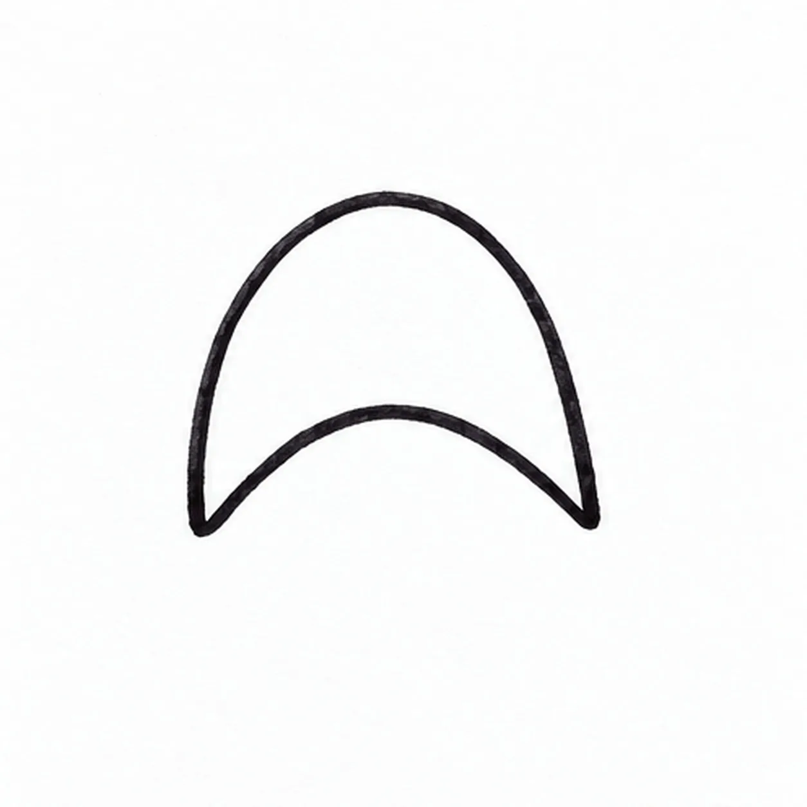
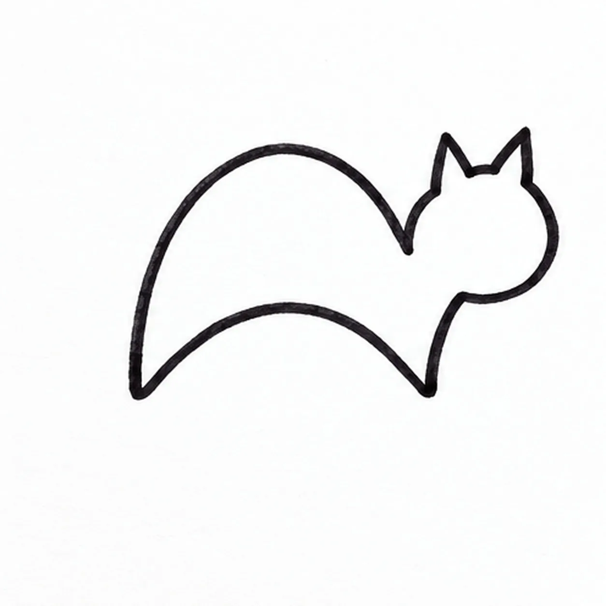
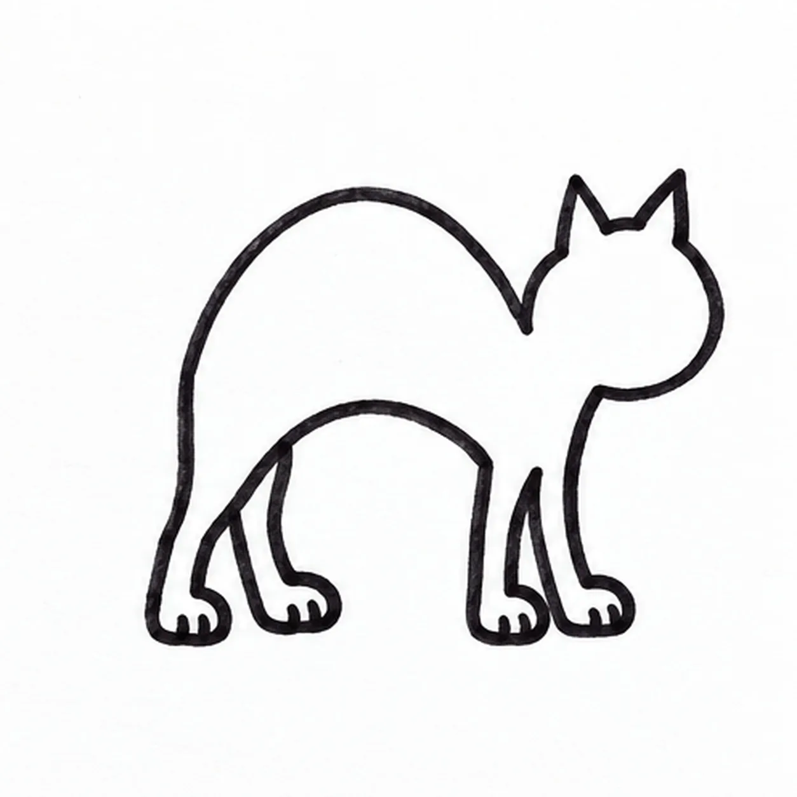
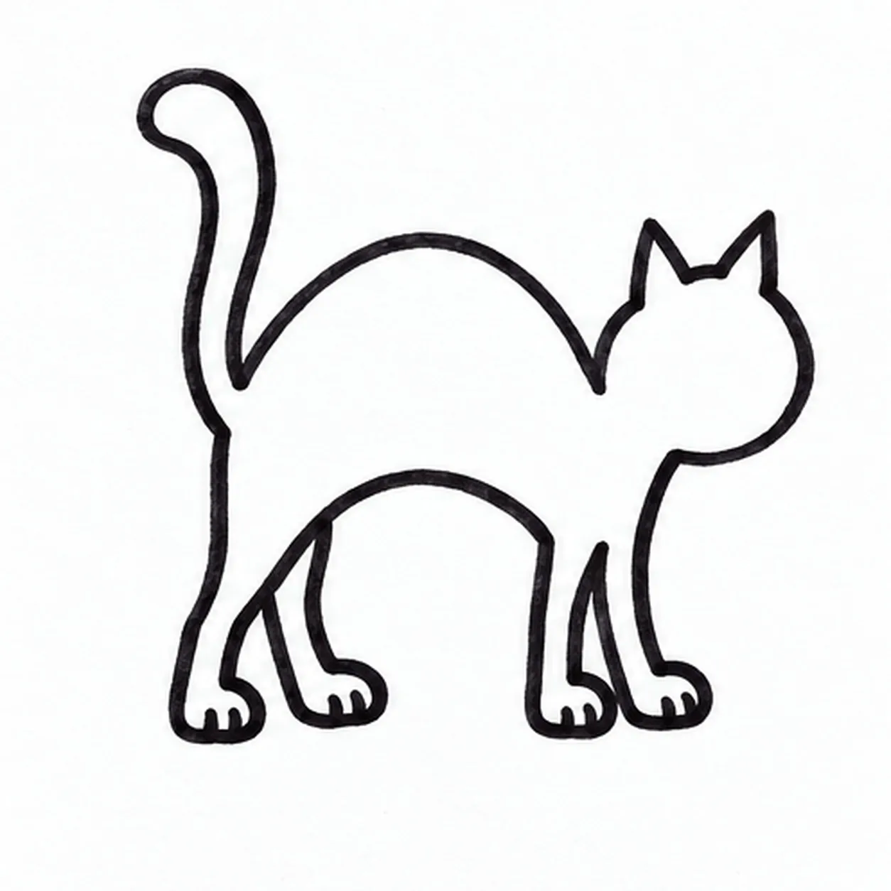
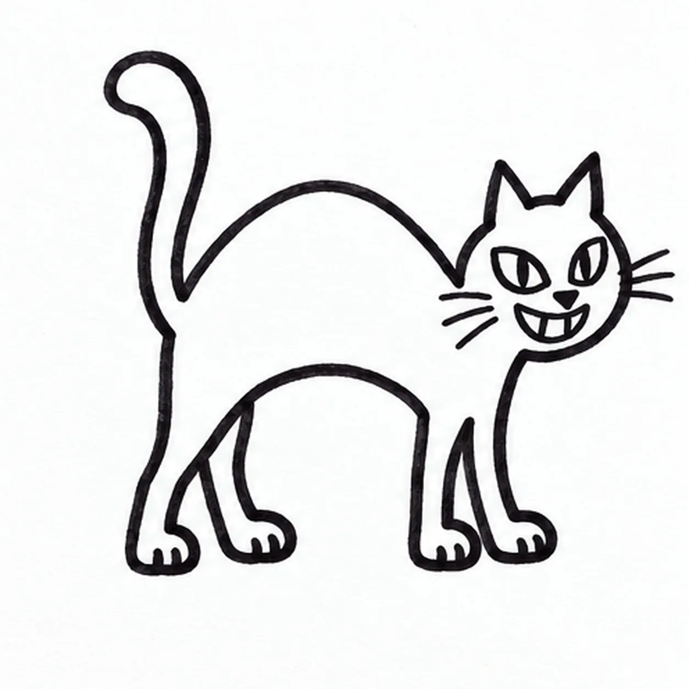

Marker ready?
Let's draw a black cat
Treat this as one playful practice round: sketch the idea loosely, simplify the shapes, then commit with confident marker outlines and bright fills.
-
01

Arch the back
Start near the left rump, sweep a high arch toward the right shoulder, and add a shallow belly curve below it. Leave the ends open for the head, legs and tail.
Marker tip: Keep the belly curve shallower than the back arch so the pose reads clearly.
-
02

Attach the head
At the right shoulder, round a small cheek and muzzle facing right. Raise two pointed ears from the head top and join the neck to the existing back.
Marker tip: Leave the left rump open for a tail and the lower edge open for four legs.
-
03

Set down four paws
Drop two short front legs under the head and two back legs under the rump; end each with a rounded paw and keep all four on one ground level.
Marker tip: Count two rear paws and two front paws before moving on.
-
04

Curl the tail
From the left rump, lift a thick tail upward and curve its tip left; return the inner edge to the same rump attachment without crossing the back.
Marker tip: Keep the tail tip inside the page and clear of the cat ears.
-
05

Give the cat a grin
Place two slanted almond eyes, a tiny triangle nose and a broad grin with two small teeth. Flick three whiskers from each cheek without moving the head.
Marker tip: Use slanted eyes and a toothy grin, not dot eyes and a U-smile.
-
06

Fill the cat with marker
Fill the established cat silhouette with uneven black marker strokes, leave slim paper highlights on the back and tail, and tint the existing eyes amber. Keep the grin and whiskers clear.
Marker tip: Let marker streaks show, and preserve both sets of whiskers as light or dark contrast.